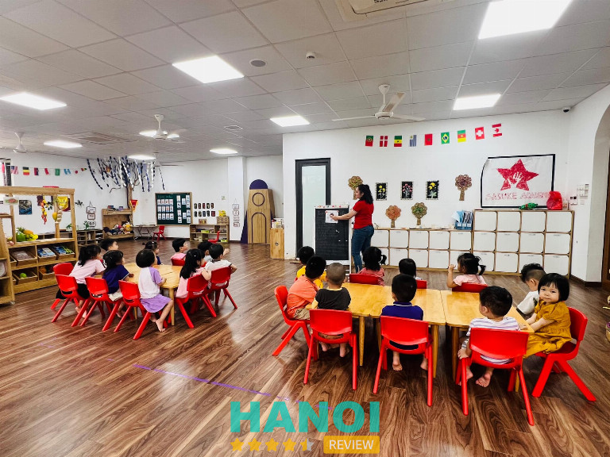
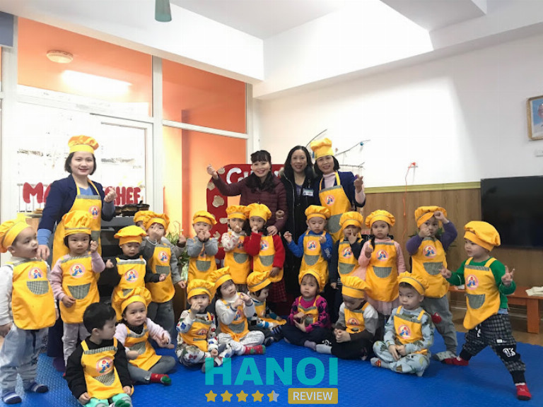
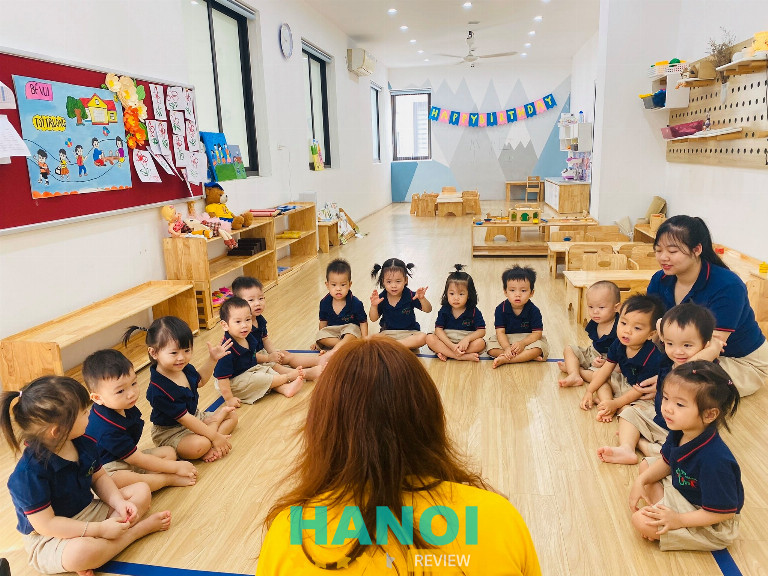
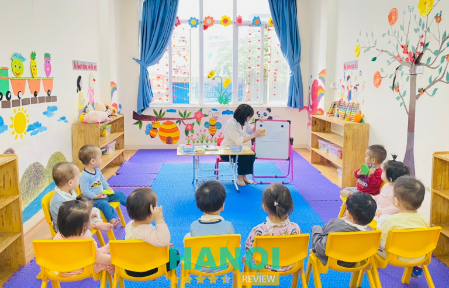
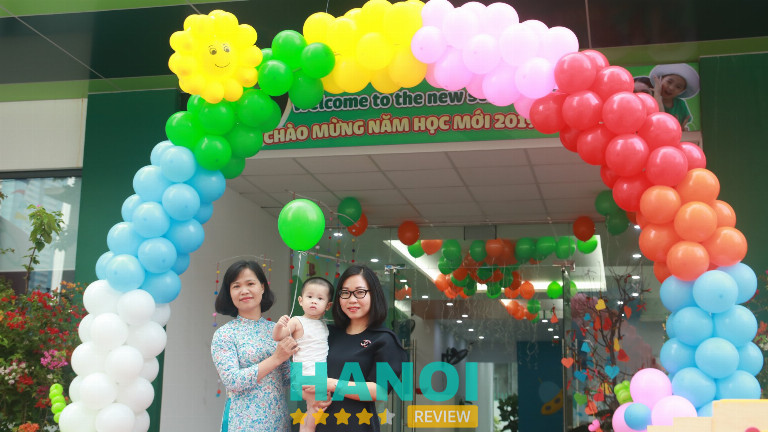
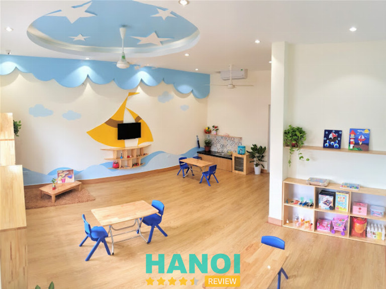
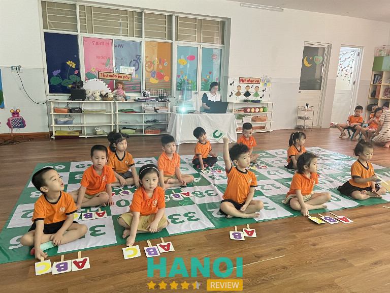
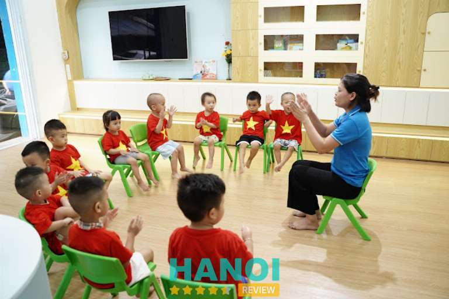
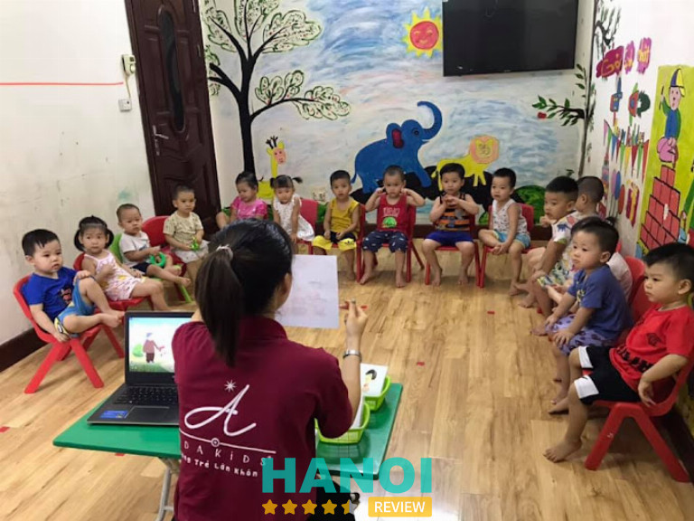
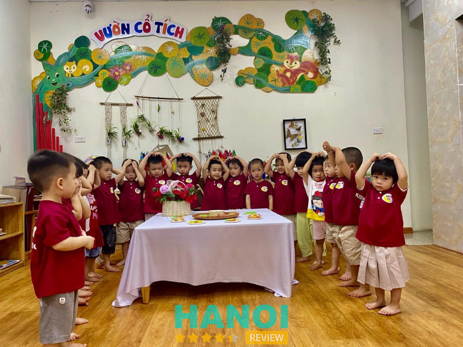

10 Trường mầm non tại quận Thanh Xuân chất lượng tốt nhất
Có không ít trường mầm non tại Quận Thanh Xuân uy tín, chất lượng, phản ánh cam kết của địa phương trong việc cung cấp một nền tảng giáo dục mầm non vững chắc. Những trường này áp dụng các phương pháp giáo dục tiên tiến và cung cấp môi trường học tập an toàn, làm nền tảng để phát triển tiềm năng toàn diện của trẻ.
Top 10 Trường mầm non ở quận Thanh Xuân tốt nhất
Quận Thanh Xuân, một trong những khu vực sầm uất và đông đúc tại Hà Nội, cũng là nơi tập trung của nhiều trường mầm non chất lượng cao, mang lại sự lựa chọn đa dạng cho các bậc phụ huynh có con em trong giai đoạn từ 1 – 6 tuổi. Sự phát triển mạnh mẽ của các cơ sở này phản ánh nhu cầu ngày càng tăng về một nền giáo dục đầu đời chất lượng cao, chuẩn bị tốt nhất cho tương lai của trẻ.
Trường mầm non song ngữ Sasuke
Trường mầm non song ngữ Sasuke là hệ thống giáo dục tư thục chất lượng với 14 cơ sở trải rộng khắp Thủ đô Hà Nội. Trong đó, chi nhánh ở quận Thanh Xuân đã trở thành một trong những địa chỉ giáo dục mầm non uy tín.
Học phí tại trường mầm non song ngữ Sasuke dao động tuỳ theo hệ học, cụ thể như sau:
| Hệ học | Học phí ( VND/ tháng) |
| Hệ nâng cao tiếng Anh | 6.000.000 |
| Hệ song ngữ | 9.000.000 |
| Hệ Quốc tế | 12.000.000 |
Tại Sasuke chú trọng phát triển một môi trường giáo dục toàn diện, dựa trên các giá trị yêu thương, tôn trọng và thấu hiểu, giúp trẻ phát triển một cách tự nhiên. Các hoạt động giáo dục tại trường mầm non này luôn hướng đến việc nuôi dưỡng sự sáng tạo, khả năng tư duy ngôn ngữ và kỹ năng sống cần thiết cho trẻ.

Một trong những điểm nổi bật của trường mầm non song ngữ Sasuke là chương trình giáo dục hiện đại, bao gồm phương pháp Montessori và STEAM, cùng với dạy học dự án, giúp trẻ học tập trong một môi trường năng động và sáng tạo. Điều này thể hiện qua cơ sở vật chất hiện đại, các phòng học rộng rãi, sạch đẹp, và các tiện ích như camera trực tuyến, dịch vụ ăn tối, tắm và ngủ qua đêm tại trường.
Đội ngũ giáo viên tại Sasuke là những chuyên gia giáo dục có trình độ cao, được đào tạo bài bản từ các trường đại học hàng đầu. Các thầy cô tại Sasuke không chỉ giỏi chuyên môn mà còn rất tâm huyết với sự nghiệp mầm non, sẵn sàng học hỏi và thích ứng với các phương pháp giáo dục mới nhất trên thế giới, luôn đảm bảo rằng mỗi giờ học là một trải nghiệm thú vị và bổ ích cho trẻ.
Thông tin liên hệ:
- Địa chỉ: 82 Nguyễn Tuân, Thanh Xuân, Hà Nội
- Điện thoại: 0926 332 882
- Email: hocviensasuke@gmail.com
- Website: sasukeacademy.edu.vn
- Facebook: FB.com/Sasukethanhxuan
Trường Mầm Non Thanh Xuân Nam
Trường Mầm Non Thanh Xuân Nam, một cơ sở giáo dục công lập nằm tại quận Thanh Xuân. Tại đây nhận nuôi dạy các em nhỏ từ 12 tháng đến 5 tuổi. Trường được biết đến với môi trường học tập an toàn và thân thiện, nơi trẻ em được khuyến khích phát triển tối đa cả về thể chất và sức khỏe.
Trường Mầm Non Thanh Xuân Nam đặc biệt chú trọng đến sự phát triển toàn diện của trẻ. Các chương trình giáo dục tại đây bao gồm phát triển nhận thức và kỹ năng học tập, phát triển thể chất cùng kỹ năng vận động, ngôn ngữ và kỹ năng giao tiếp xã hội, cũng như phát triển tình cảm và các kỹ năng sống cần thiết.

Vấn đề dinh dưỡng và sức khỏe của trẻ luôn được nhà trường quan tâm hàng đầu. Trường Mầm Non Thanh Xuân Nam cung cấp một chế độ dinh dưỡng cân bằng và hợp lý, đảm bảo an toàn vệ sinh thực phẩm. Cùng với đó, nhà trường cũng thực hiện việc cân đo và theo dõi sức khỏe định kỳ cho trẻ, nhằm đảm bảo một chế độ chăm sóc và nuôi dưỡng phù hợp nhất.
Trường Mầm Non Thanh Xuân Nam tự hào với những thành tích đã đạt được trong những năm qua, từng bước khẳng định mình là một địa chỉ giáo dục mầm non tin cậy tại quận Thanh Xuân. Sự nỗ lực không ngừng của đội ngũ giáo viên và ban quản lý nhà trường đã tạo nên một môi trường giáo dục chất lượng, nơi hội tụ những nụ cười rạng rỡ và niềm vui của trẻ thơ.
Thông tin liên hệ:
- Địa chỉ: Ngõ 469 Nguyễn Trãi, Thanh Xuân Nam, Thanh Xuân, Hà Nội
- Điện thoại: 0243 854 2378
- Website: mntxnam.pgdthanhxuan.edu.vn
Doremi Montessori Kindergarten
Doremi Montessori Kindergarten là một trong những trường mầm non năng khiếu hàng đầu tại quận Thanh Xuân, nổi tiếng với việc áp dụng phương pháp giáo dục Montessori chuẩn quốc tế. Nhà trường cam kết mang lại một môi trường giáo dục lý tưởng, nơi trẻ em được phát triển toàn diện theo khả năng và sở thích cá nhân của mình.
Tại Doremi Montessori Kindergarten, mỗi lớp học được trang bị các giáo cụ phù hợp theo phương pháp Montessori, giúp trẻ phát triển các kỹ năng vận động, thính giác, thị giác và tăng cường khả năng giao tiếp và hợp tác. Nhà trường đặc biệt chú trọng đến việc phát triển ngôn ngữ, với các tiết học tiếng Anh hàng ngày cùng giáo viên bản ngữ theo chương trình Grapeseed, giúp trẻ phát âm chuẩn và cải thiện khả năng giao tiếp.

Học phí tại Doremi Montessori Kindergarten dao động như sau:
| Chương trình học | Học phí (VND/ Tháng) |
| Hệ Montessori song ngữ | 5.000.000 |
| Hệ Montessori quốc tế | 7.000.000 |
Doremi Montessori Kindergarten không chỉ dạy kỹ năng học thuật mà còn tập trung vào việc phát triển năng khiếu cá nhân của trẻ. Chương trình giáo dục bao gồm các hoạt động nghệ thuật như cảm thụ âm nhạc, mỹ thuật sáng tạo, múa hiện đại và võ thuật, tạo điều kiện cho trẻ phát triển tài năng trong một môi trường yêu thương và tôn trọng cá nhân.
Bên cạnh đó, Doremi Montessori Kindergarten còn tổ chức các chương trình dã ngoại thường xuyên, với 4 buổi mỗi tháng, bao gồm các chuyến đi fieldtrip và fieldwalk theo chủ đề học, cũng như các buổi picnic cả ngày. Những hoạt động này không chỉ giúp trẻ mở rộng kiến thức thực tế mà còn góp phần vào sự phát triển tâm lý và thể chất, giúp trẻ hòa nhập và hạnh phúc hơn trong quá trình học tập và tương tác với bạn bè.
Thông tin liên hệ:
- Địa chỉ: NV15 – 16 imperia garden, 143 Nguyễn Tuân, Thanh Xuân, Hà Nội
- Điện thoại: 032 835 6866
- Email: doremi.edu.vn@gmail.com
- Facebook: FB.com/DoremiMontessoriKindergarten
Little Bees Preschool
Little Bees Preschool, hay còn được biết đến với tên gọi Bé Ong, là một trong những trường mầm non hàng đầu tại quận Thanh Xuân. Đơn vị này nổi bật với việc áp dụng phương pháp giáo dục STEAM và Khoa học diệu kỳ. Trường tự hào là một trong những cơ sở giáo dục mầm non đầu tiên tại khu vực đưa phương pháp giáo dục tiên tiến này vào chương trình đào tạo.
Cơ sở vật chất tại Little Bees Preschool rộng rãi, thoáng mát và đầy đủ ánh sáng tự nhiên, với các phòng chức năng được thiết kế riêng biệt cho từng hoạt động giáo dục. Trường cam kết mang đến một môi trường học tập an toàn và thân thiện, nơi mỗi bé có thể khám phá và phát triển trong điều kiện tốt nhất.

Chương trình giáo dục tại Little Bees rất đa dạng, bao gồm các hoạt động STEAM cho phép trẻ tham gia vào các dự án thực hành xuyên suốt các lĩnh vực Khoa học, Công nghệ, Kỹ thuật, Nghệ thuật và Toán học. Đồng thời, trường còn có chương trình Khoa học diệu kỳ, được phát triển bởi tập đoàn Dongsim của Hàn Quốc, giúp trẻ mở rộng hiểu biết về thế giới xung quanh mình.
Đội ngũ giáo viên tại Little Bees được tuyển chọn kỹ lưỡng, với trình độ chuyên môn cao và tâm huyết với nghề. Ngoài các hoạt động học tập trong lớp, Little Bees Preschool còn tổ chức thường xuyên các hoạt động thăm quan và dã ngoại, giúp trẻ tích lũy kinh nghiệm thực tế và phát triển kỹ năng sống.
Thông tin liên hệ:
- Địa chỉ: 94 Hoàng Văn Thái, Khương Trung, Thanh Xuân, Hà Nội
- Điện thoại: 077 220 0058
- Email: mamnonbeong@gmail.com
- Facebook: FB.com/Beongmamnon
Xem thêm: 10 Trường mầm non quốc tế tại Hà Nội uy tín, được đánh giá cao
Greenery Preschool
Greenery Preschool, một trường mầm non song ngữ chất lượng cao tại quận Thanh Xuân. Ngôi trường này không chỉ cung cấp một môi trường học tập lý tưởng mà còn đảm bảo rằng mỗi đứa trẻ có thể học hỏi và sử dụng tiếng Anh một cách tự nhiên trong các hoạt động hàng ngày.
Đặc biệt, Greenery Preschool áp dụng “Thuyết đa trí thông minh” cùng với các phương pháp giáo dục tiên tiến như Montessori, Reggio Emilia và STEAM. Những phương pháp này được chọn lựa kỹ lưỡng nhằm kích thích tư duy, sáng tạo và khả năng tự khám phá của trẻ.

Ngoài ra, Greenery Preschool còn chú trọng đến việc tổ chức các hoạt động ngoại khóa để trẻ thỏa sức sáng tạo và vui chơi trong một môi trường an toàn và thân thiện. Các chương trình này bao gồm các hoạt động thực hành như mỹ thuật, âm nhạc, thể thao và khám phá thiên nhiên, giúp trẻ phát triển các kỹ năng xã hội và tinh thần độc lập từ sớm.
Đặc biệt, việc chăm sóc sức khỏe và dinh dưỡng của học sinh là một trong những ưu tiên hàng đầu tại Greenery Preschool. Trường cung cấp các bữa ăn ngon miệng và cân đối, được chuẩn bị từ những nguồn thực phẩm sạch và an toàn, đảm bảo sự phát triển khỏe mạnh của trẻ về thể chất.
Thông tin liên hệ:
- Địa chỉ: 35 Lê Văn Thiêm, Thanh Xuân Trung, Thanh Xuân, Hà Nội
- Điện thoại: 090 165 3535
- Website: greenery.edu.vn
- Facebook: FB.com/greenery.preschool
Baby Bamboo Preschool
Baby Bamboo Preschool không chỉ là một trường mầm non, mà còn là một ngôi nhà thứ hai, nơi các bé được đón nhận trong tình yêu thương và sự chăm sóc tận tâm. Trường áp dụng phương pháp giáo dục STEM + ART bản quyền từ Hoa Kỳ, chú trọng vào giáo dục nhân cách và phát triển trí tuệ toàn diện cho từng cá nhân.
Với cơ sở vật chất khang trang, phòng học rộng gần 500m2, Baby Bamboo Preschool cung cấp không gian học tập lý tưởng, đầy ánh sáng và thoáng đãng. Các phòng học được thiết kế đặc biệt với nhiều góc hoạt động. Trường còn trang bị đầy đủ các giáo cụ, thiết bị học tập hiện đại và đồ chơi phong phú, đảm bảo một môi trường giáo dục chất lượng cao.

Đội ngũ giáo viên giàu kinh nghiệm và nhiệt huyết tại Baby Bamboo luôn sẵn sàng hỗ trợ và phát triển từng bé, không chỉ trong việc học tập mà còn trong cách hòa nhập và tương tác với bạn bè. Nhà trường cũng tổ chức thường xuyên các sự kiện và hoạt động ngoại khóa, giúp trẻ thực hành các kỹ năng đã học và gắn kết gia đình trong một môi trường học tập vui vẻ và bổ ích.
Baby Bamboo Preschool còn chú trọng vào chế độ dinh dưỡng cho trẻ với thực đơn 4 tuần không lặp lại, cung cấp đầy đủ dưỡng chất cần thiết cho sự phát triển khỏe mạnh của các bé. Tất cả thực phẩm được lựa chọn kỹ lưỡng từ những nhà cung cấp uy tín, đảm bảo vệ sinh an toàn thực phẩm, giúp trẻ phát triển toàn diện cả về thể chất lẫn tinh thần.
Thông tin liên hệ:
- Địa chỉ: Ngõ 31 Phương Liệt, Thanh Xuân, Hà Nội
- Điện thoại: 094 835 7391
- Email: babybamboo.info@gmail.com
- Facebook: FB.com/BabyBambooPreschool
Trường Mầm Non Song Ngữ Hoa Trà My
Trường Mầm non song ngữ Hoa Trà My, tọa lạc tại Quận Thanh Xuân, là một trong những cơ sở giáo dục mầm non hàng đầu với gần 20 năm kinh nghiệm trong ngành. Trường cam kết mang đến một chương trình học linh hoạt và đa dạng, chú trọng vào việc phát triển ngôn ngữ tiếng Anh và các bộ môn năng khiếu, giúp các bé phát triển tối ưu.
Hoa Trà My nhận trẻ từ 12 tháng đến 5 tuổi, phân chia theo các lớp Mầm, Chồi, Lá và Hoa. Mỗi lớp học tại trường được thiết kế để phù hợp với độ tuổi và nhu cầu phát triển của trẻ. Nhà trường tự hào về đội ngũ giáo viên Việt Nam và quốc tế giàu kinh nghiệm, nhiệt huyết và tận tâm, đảm bảo mang lại chất lượng giáo dục xuất sắc cho mỗi học sinh.

Trong môi trường giáo dục của Hoa Trà My, trẻ được học tiếng Anh hàng ngày với giáo viên nước ngoài. Ngoài ra trường còn có các giờ học kỹ năng sống và năng khiếu như múa, võ, piano, mỹ thuật và STEAM. Các hoạt động giáo dục được thiết kế không chỉ nhằm phát triển trí tuệ mà còn cảm xúc và thể chất của trẻ.
Ngoài chương trình học tập, trường Hoa Trà My còn chú trọng đến sức khỏe của trẻ với chế độ ăn uống được theo dõi và kiểm soát nghiêm ngặt theo tiêu chuẩn viện dinh dưỡng. Việc khám sức khỏe định kỳ cùng với sự chăm sóc hàng ngày từ nhân viên y tế riêng của trường đảm bảo sức khỏe tốt nhất cho các bé, giúp phụ huynh hoàn toàn an tâm khi gửi con đến Hoa Trà My.
Thông tin liên hệ:
- Địa chỉ: Ngõ 07 Hoàng Minh Giám, Thanh Xuân, Hà Nội
- Điện thoại: 0933 168 169
- Email: mamnonhoatramy@gmail.com
- Website: hoatramyschool.edu.vn
- Facebook: FB.com/TruongMamNonSongNguHoaTraMy
Trường Mầm Non Thiên Ánh
Trường Mầm Non Thiên Ánh có hai cơ sở hiện đại ngay tại quận Thanh Xuân. Kể từ ngày thành lập vào 07/04/2016, Thiên Ánh không ngừng nỗ lực trong việc phát triển chương trình giảng dạy hòa quyện giữa tinh hoa giáo dục quốc tế và chuẩn mực giáo dục của Bộ Giáo dục Việt Nam. Nhờ đó, trường đã nhận được sự tin tưởng và yêu mến từ đông đảo phụ huynh.
Tại Thiên Ánh, mỗi ngày đến trường của trẻ là một ngày tràn ngập niềm vui và sáng tạo. Trường áp dụng các phương pháp giáo dục tiên tiến như Montessori, Glenn Doman và STEAM, đi đôi với các phương pháp truyền thống, tạo nên một chương trình học đa dạng phù hợp với từng lứa tuổi. Các hoạt động “Học mà chơi, chơi mà học” giúp trẻ tiếp thu kiến thức một cách tự nhiên, kích thích trí não và phát triển các kỹ năng sống cần thiết.

Ngoài ra, trẻ em tại Thiên Ánh được học tiếng Anh theo giáo trình Phonics, giúp trẻ đánh vần và phát âm tiếng Anh một cách chuẩn xác từ sớm. Việc học tiếng Anh hàng ngày với phương pháp này làm cho ngôn ngữ trở nên thân thiện và dễ tiếp cận, giúp trẻ phát triển khả năng ngôn ngữ một cách hiệu quả.
Để đảm bảo chất lượng giáo dục cao nhất, Thiên Ánh chú trọng đến việc tuyển chọn và đào tạo đội ngũ giáo viên. Các giáo viên tại đây không chỉ giỏi chuyên môn mà còn rất yêu thương trẻ, luôn sẵn sàng hỗ trợ và phát triển từng cá nhân trong một môi trường thấu hiểu và tôn trọng sự khác biệt của mỗi bé.
Thông tin liên hệ:
- Địa chỉ: 159 Chính Kinh, Nhân Chính, Thanh Xuân, Hà Nội
- Điện thoại: 0966 728 875
- Email: thienanh2015@gmail.com
- Website: mamnonthienanh.com
- Facebook: FB.com/thienanh.kindergarten
Trường Mầm Non Táo Đỏ
Mầm Non Táo Đỏ, tọa lạc tại Thanh Xuân Bắc, Hà Nội, là một trường mầm non tiêu biểu, được xây dựng dựa trên mô hình giáo dục của tiểu bang New South Wales, Úc. Trường hợp tác chặt chẽ với các chuyên gia, thạc sĩ và NCS từ trường Đại học New South Wales, Sydney, mang đến một chương trình giáo dục chất lượng cao.
Tại Mầm Non Táo Đỏ, mỗi ngày đến trường của trẻ là một hành trình khám phá mới, nơi trẻ được phát triển toàn diện trong một môi trường thân thiện và đầy tiếng cười. Với phương châm “mỗi lớp học là một ngôi nhà”, trường tạo dựng không gian học tập an toàn và ấm cúng, nơi trẻ em không chỉ học mà còn được sống và tương tác, phát triển ngôn ngữ, trí tuệ, thể chất và kỹ năng sống.

Cơ sở vật chất của Mầm Non Táo Đỏ được thiết kế khoa học, với tòa nhà 5 tầng mỗi không gian được sắp xếp tối ưu hóa cho sự phát triển của trẻ. Tầng một dành cho khu vực vui chơi và bàn tiếp khách, trong khi các tầng 2, 3 và 4 là các lớp học được thiết kế đặc biệt để khuyến khích trẻ tương tác và sáng tạo. Tầng 5 là khu bếp sạch sẽ, vệ sinh, đảm bảo an toàn thực phẩm cho các bữa ăn dinh dưỡng của trẻ.
Mầm Non Táo Đỏ không chỉ chú trọng đến việc giáo dục trẻ theo chương trình chuẩn mà còn rất coi trọng việc phát triển tư duy và nhân cách của mỗi cá nhân. Trường sử dụng các phương pháp giáo dục tiên tiến, không chỉ kích thích trí tuệ mà còn phát triển năng khiếu, phẩm chất tốt đẹp và tính cách độc lập cho trẻ.
Thông tin liên hệ:
- Địa chỉ: 12 – D4, Thanh Xuân Bắc, Thanh Xuân, Hà Nội
- Điện thoại: 0984 852 860
- Email: taodothanhxuanbac@gmail.com
- Website: taodothanhxuanbac.wixsite.com
- Facebook: FB.com/Taodothanhxuanbac
Trường Mầm non Phương Nga
Nằm tại Quận Thanh Xuân, Trường Mầm Non Phương Nga là một trong những cơ sở giáo dục uy tín được phần đông phụ huynh khu vực tín nhiệm. Được thành lập từ năm 1997, Phương Nga đã không ngừng phát triển và mở rộng với sứ mệnh giáo dục sớm, nhằm khai thác và phát huy tối đa tiềm năng của trẻ em trong lứa tuổi mầm non.
Tại Trường Mầm Non Phương Nga, trẻ được học trong một môi trường an toàn, khang trang và sạch sẽ, được trang bị đầy đủ các thiết bị học tập phù hợp với từng lứa tuổi. Cơ sở vật chất bao gồm hệ thống camera quan sát trực tuyến, sân chơi ngoài trời với bể vầy và các đồ chơi thật ấn tượng, tạo điều kiện cho trẻ phát triển về thể chất và tư duy sáng tạo một cách tự nhiên.

Đội ngũ giáo viên tại Phương Nga được tuyển chọn kỹ lưỡng, tất cả đều tốt nghiệp loại khá – giỏi từ các trường Cao đẳng mẫu giáo, giàu kinh nghiệm và yêu thương trẻ. Các giáo viên thường xuyên được đào tạo nâng cao chất lượng chuyên môn, nhằm đáp ứng tốt nhất nhu cầu phát triển của trẻ.
Trường Mầm Non Phương Nga cũng rất chú trọng vào các hoạt động ngoại khóa như tiếng Anh, âm nhạc, múa, thể dục Aerobic, đàn organ và vẽ, được giảng dạy bởi các giáo viên chuyên môn. Nhà trường thường xuyên tổ chức các buổi giao lưu giữa phụ huynh và nhà trường, cũng như các chuyến đi tham quan bổ ích, nhằm tăng cường sự liên kết giữa gia đình và nhà trường, đồng thời mở rộng kiến thức thực tế cho trẻ.
Thông tin liên hệ:
- Địa chỉ: 106A Quan Nhân, Nhân Chính, Thanh Xuân, Hà Nội
- Điện thoại: 091 394 9311
- Email: chuquynhnga76@gmail.com
- Facebook: FB.com/mamnonphuongnga.edu.vn
7 điều phụ huynh cần lưu ý khi chọn trường mầm non ở quận Thanh Xuân
Việc chọn đúng trường mầm non cho con không chỉ đặt nền móng vững chắc cho sự phát triển giáo dục đầu đời của trẻ mà còn ảnh hưởng sâu sắc đến sự hình thành nhân cách và các kỹ năng xã hội. Một môi trường mầm non chất lượng cao sẽ kích thích trẻ phát triển tối đa cả về trí tuệ lẫn thể chất, giúp trẻ tự tin và sẵn sàng cho những bước tiếp theo trong hành trình học vấn.
Đặc biệt tại quận Thanh Xuân, nơi có nhiều trường mầm non, các bậc phụ huynh cần tìm hiểu kỹ lưỡng 7 yếu tố sau để đảm bảo lựa chọn phù hợp nhất cho con mình:
- Phương pháp giáo dục: Kiểm tra xem nhà trường áp dụng phương pháp giáo dục nào (ví dụ: Montessori, STEAM, giáo dục sớm theo chuẩn quốc tế,…) và liệu phương pháp đó có phù hợp với nhu cầu phát triển của trẻ hay không.
- Cơ sở vật chất: Đảm bảo rằng trường có cơ sở vật chất khang trang, an toàn và thân thiện với trẻ nhỏ, bao gồm các lớp học rộng rãi, khu vui chơi ngoài trời, và các trang thiết bị học tập phù hợp.
- Đội ngũ giáo viên: Tìm hiểu về trình độ chuyên môn và kinh nghiệm của giáo viên cũng như thái độ chăm sóc, yêu thương trẻ của họ.
- Chương trình học: Xem xét liệu chương trình học có đa dạng, cập nhật và có tích hợp các hoạt động ngoại khóa như nghệ thuật, âm nhạc, thể dục,… hay không.
- An toàn và sức khỏe: Kiểm tra các biện pháp an toàn, sức khỏe tại trường như hệ thống camera, sự hiện diện của nhân viên y tế, và chế độ ăn uống cho trẻ.
- Tương tác với phụ huynh: Đánh giá cách thức nhà trường liên lạc với phụ huynh và cung cấp thông tin về tiến trình học tập và phát triển của trẻ.
- Uy tín và phản hồi từ phụ huynh khác: Tìm hiểu ý kiến và đánh giá từ các bậc phụ huynh đã có con em theo học tại trường để đánh giá mức độ hài lòng và uy tín của trường.
Nhìn chung, các trường mầm non ở Quận Thanh Xuân đang từng bước khẳng định vai trò quan trọng trong việc nâng cao chất lượng giáo dục mầm non, đóng góp vào sự phát triển toàn diện của thế hệ tương lai. Sự đa dạng về phương pháp giáo dục cùng với cơ sở vật chất hiện đại và đội ngũ giáo viên chuyên nghiệp chính là những yếu tố then chốt giúp những cơ sở này trở thành điểm đến tin cậy cho các bậc phụ huynh khi tìm kiếm môi trường giáo dục mầm non tốt nhất cho con em mình.
Có thể bạn quan tâm
- 5 Trung tâm dạy kỹ năng sống cho trẻ tại Hà Nội chất lượng nhất
- 5 Phòng khám nha khoa tại Q. Thanh Xuân, Hà Nội uy tín nhất
- 10 Shop hoa tươi quận Thanh Xuân nhiều mẫu đẹp, dịch vụ tốt
- 5 Phòng tập Yoga quận Thanh Xuân tốt nhất, giáo viên tâm huyết
DOANH NGHIỆP: Đăng tải thông tin MIỄN PHÍ.
Tin đọc nhiều


3 Trung tâm dạy trẻ chậm nói tại quận Cầu Giấy uy tín nhất
Các trung tâm dạy trẻ chậm nói tại quận Cầu Giấy luôn là các địa chỉ được nhiều gia đình có con em mắc phải...

10 Trường mầm non quốc tế tại Hà Nội uy tín, được đánh giá cao
Các trường mầm non quốc tế tại Hà Nội hoạt động ngày càng nhiều khiến không ít phụ huynh lúng túng trong việc tìm kiếm...

Trở thành người đầu tiên bình luận cho bài viết này!